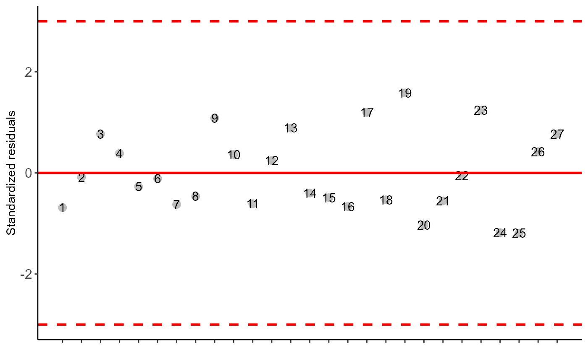
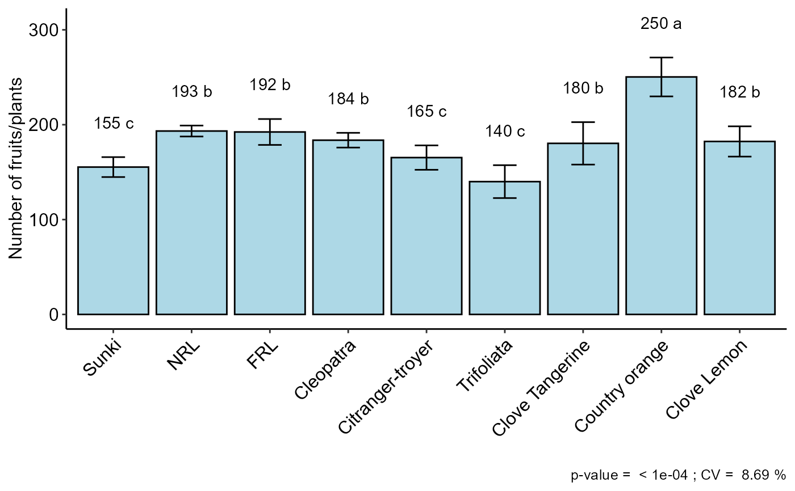
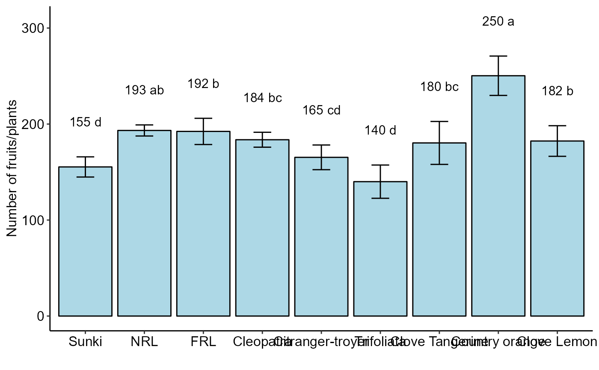
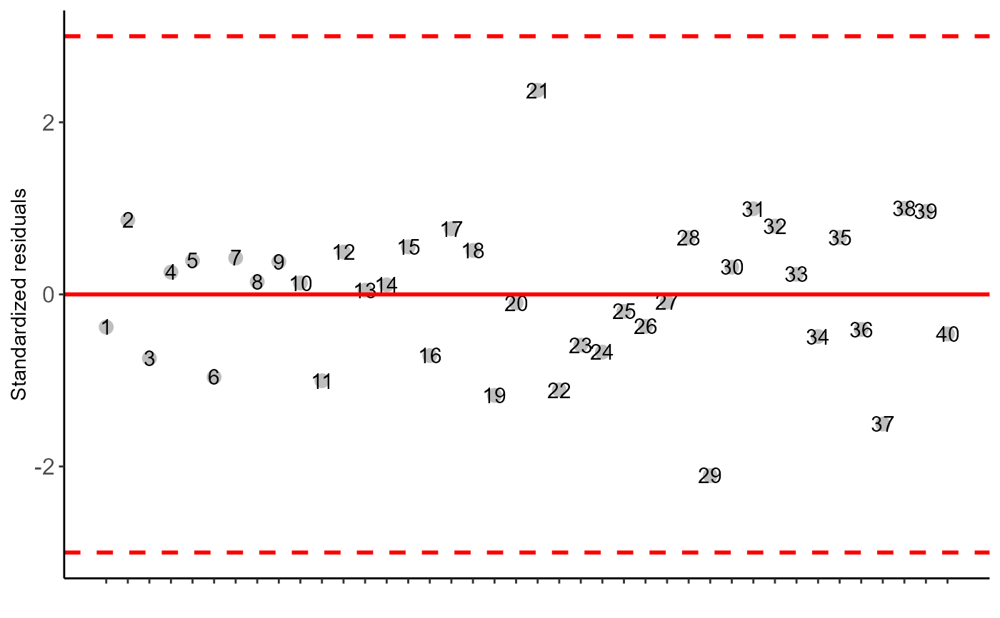
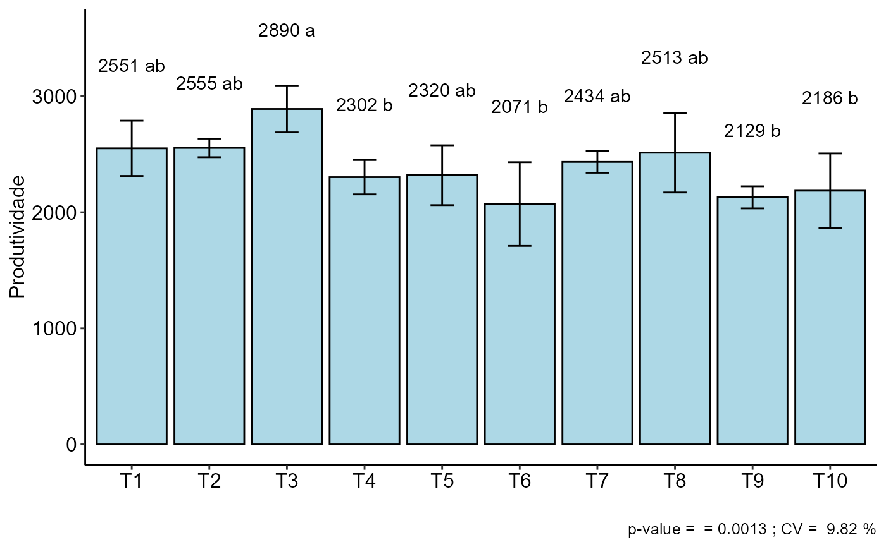

DBC.RdThis is a function of the AgroR package for statistical analysis of experiments conducted in a randomized block and balanced design with a factor considering the fixed model.
DBC( trat, block, response, norm = "sw", homog = "bt", mcomp = "tukey", quali = TRUE, alpha.f = 0.05, alpha.t = 0.05, transf = 1, test = "parametric", grau = 1, geom = "bar", theme = theme_classic(), sup = NA, CV = TRUE, ylab = "response", xlab = "", textsize = 12, fill = "lightblue", angle = 0, family = "sans", dec = 3, addmean = TRUE, errorbar = TRUE, posi = "top", point = "mean_sd", angle.label = 0 )
| trat | Numerical or complex vector with treatments |
|---|---|
| block | Numerical or complex vector with blocks |
| response | Numerical vector containing the response of the experiment. |
| norm | Error normality test (default is Shapiro-Wilk) |
| homog | Homogeneity test of variances (default is Bartlett) |
| mcomp | Multiple comparison test (Tukey (default), LSD, Scott-Knott and Duncan) |
| quali | Defines whether the factor is quantitative or qualitative (default is qualitative) |
| alpha.f | Level of significance of the F test (default is 0.05) |
| alpha.t | Significance level of the multiple comparison test (default is 0.05) |
| transf | Applies data transformation (default is 1; for log consider 0) |
| test | "parametric" - Parametric test or "noparametric" - non-parametric test |
| grau | Degree of polynomial in case of quantitative factor (default is 1) |
| geom | graph type (columns, boxes or segments) |
| theme | ggplot2 theme (default is theme_classic()) |
| sup | Number of units above the standard deviation or average bar on the graph |
| CV | Plotting the coefficient of variation and p-value of Anova (default is TRUE) |
| ylab | Variable response name (Accepts the expression() function) |
| xlab | Treatments name (Accepts the expression() function) |
| textsize | Font size |
| fill | Defines chart color (to generate different colors for different treatments, define fill = "trat") |
| angle | x-axis scale text rotation |
| family | Font family |
| dec | Number of cells |
| addmean | Plot the average value on the graph (default is TRUE) |
| errorbar | Plot the standard deviation bar on the graph (In the case of a segment and column graph) - default is TRUE |
| posi | Legend position |
| point | Defines whether to plot mean ("mean"), mean with standard deviation ("mean_sd" - default) or mean with standard error (default - "mean_se"). |
| angle.label | label angle |
The table of analysis of variance, the test of normality of errors (Shapiro-Wilk, Lilliefors, Anderson-Darling, Cramer-von Mises, Pearson and Shapiro-Francia), the test of homogeneity of variances (Bartlett or Levene), the test of independence of Durbin-Watson errors, the test of multiple comparisons (Tukey, LSD, Scott-Knott or Duncan) or adjustment of regression models up to grade 3 polynomial, in the case of quantitative treatments. Non-parametric analysis can be used by the Friedman test. The column, segment or box chart for qualitative treatments is also returned. The function also returns a standardized residual plot.
The ordering of the graph is according to the sequence in which the factor levels are arranged in the data sheet. The bars of the column and segment graphs are standard deviation.
CV and p-value of the graph indicate coefficient of variation and p-value of the F test of the analysis of variance.
In the final output when transformation (transf argument) is different from 1, the columns resp and respo in the mean test are returned, indicating transformed and non-transformed mean, respectively.
Principles and procedures of statistics a biometrical approach Steel, Torry and Dickey. Third Edition 1997
Multiple comparisons theory and methods. Departament of statistics the Ohio State University. USA, 1996. Jason C. Hsu. Chapman Hall/CRC.
Practical Nonparametrics Statistics. W.J. Conover, 1999
Ramalho M.A.P., Ferreira D.F., Oliveira A.C. 2000. Experimentacao em Genetica e Melhoramento de Plantas. Editora UFLA.
Scott R.J., Knott M. 1974. A cluster analysis method for grouping mans in the analysis of variance. Biometrics, 30, 507-512.
Mendiburu, F., and de Mendiburu, M. F. (2019). Package ‘agricolae’. R Package, Version, 1-2.
Gabriel Danilo Shimizu, shimizu@uel.br
Leandro Simoes Azeredo Goncalves
Rodrigo Yudi Palhaci Marubayashi
library(AgroR) #============================= # Example laranja #============================= data(laranja) attach(laranja)#> #> #>#> #> #>DBC(trat, bloco, resp, mcomp = "sk", angle=45, ylab = "Number of fruits/plants")#> #> ----------------------------------------------------------------- #> Normality of errors #> ----------------------------------------------------------------- #> Method Statistic p.value #> Shapiro-Wilk normality test(W) 0.9475889 0.187264 #>#> As the calculated p-value is greater than the 5% significance level, hypothesis H0 is not rejected. Therefore, errors can be considered normal#> #> ----------------------------------------------------------------- #> Homogeneity of Variances #> ----------------------------------------------------------------- #> Method Statistic p.value #> Bartlett test(Bartlett's K-squared) 4.036888 0.85378 #>#> As the calculated p-value is greater than the 5% significance level, hypothesis H0 is not rejected. Therefore, the variances can be considered homogeneous#> #> ----------------------------------------------------------------- #> Independence from errors #> ----------------------------------------------------------------- #> Method Statistic p.value #> Durbin-Watson test(DW) 2.324604 0.2484349 #>#> As the calculated p-value is greater than the 5% significance level, hypothesis H0 is not rejected. Therefore, errors can be considered independent#> #> ----------------------------------------------------------------- #> Additional Information #> ----------------------------------------------------------------- #> #> CV (%) = 8.69 #> R-squared = 0.91 #> Mean = 182.5556 #> Median = 183 #> Possible outliers = No discrepant point #> #> ----------------------------------------------------------------- #> Analysis of Variance #> ----------------------------------------------------------------- #> Df Sum Sq Mean.Sq F value Pr(F) #> trat 8 22981.33333 2872.66667 11.41142069 2.636524e-05 #> bloco 2 33.55556 16.77778 0.06664828 9.357825e-01 #> Residuals 16 4027.77778 251.73611 #>#> As the calculated p-value, it is less than the 5% significance level. The hypothesis H0 of equality of means is rejected. Therefore, at least two treatments differ#> #> ----------------------------------------------------------------- #> Multiple Comparison Test #> ----------------------------------------------------------------- #> resp groups #> Country orange 250.3333 a #> NRL 193.3333 b #> FRL 192.3333 b #> Cleopatra 183.6667 b #> Clove Lemon 182.3333 b #> Clove Tangerine 180.3333 b #> Citranger-troyer 165.3333 c #> Sunki 155.3333 c #> Trifoliata 140.0000 c #>#============================= # Friedman test #============================= DBC(trat, bloco, resp, test="noparametric", ylab = "Number of fruits/plants")#> #> #> ----------------------------------------------------------------- #> Statistics #> ----------------------------------------------------------------- #> Chisq Df p.chisq F DFerror p.F t.value LSD #> 19.30726 8 0.01330002 8.228571 16 0.0001991497 2.119905 7.680087 #> #> #> ----------------------------------------------------------------- #> Parameters #> ----------------------------------------------------------------- #> test name.t ntr alpha #> Friedman trat 9 0.05 #> #> #> ----------------------------------------------------------------- #> Multiple Comparison Test #> ----------------------------------------------------------------- #> Mean SD Rank Groups #> Citranger-troyer 165.3333 12.858201 8.5 cd #> Cleopatra 183.6667 7.767453 16.0 bc #> Clove Lemon 182.3333 15.947832 17.5 b #> Clove Tangerine 180.3333 22.368132 16.0 bc #> Country orange 250.3333 20.502032 27.0 a #> FRL 192.3333 13.650397 19.0 b #> NRL 193.3333 5.773503 20.5 ab #> Sunki 155.3333 10.503968 6.0 d #> Trifoliata 140.0000 17.320508 4.5 d#============================= # Example soybean #============================= data(soybean) with(soybean, DBC(cult,bloc,prod,ylab="Produtividade"))#> #> ----------------------------------------------------------------- #> Normality of errors #> ----------------------------------------------------------------- #> Method Statistic p.value #> Shapiro-Wilk normality test(W) 0.97649 0.5613183 #>#> As the calculated p-value is greater than the 5% significance level, hypothesis H0 is not rejected. Therefore, errors can be considered normal#> #> ----------------------------------------------------------------- #> Homogeneity of Variances #> ----------------------------------------------------------------- #> Method Statistic p.value #> Bartlett test(Bartlett's K-squared) 9.54102 0.3889021 #>#> As the calculated p-value is greater than the 5% significance level, hypothesis H0 is not rejected. Therefore, the variances can be considered homogeneous#> #> ----------------------------------------------------------------- #> Independence from errors #> ----------------------------------------------------------------- #> Method Statistic p.value #> Durbin-Watson test(DW) 2.484876 0.5578071 #>#> As the calculated p-value is greater than the 5% significance level, hypothesis H0 is not rejected. Therefore, errors can be considered independent#> #> ----------------------------------------------------------------- #> Additional Information #> ----------------------------------------------------------------- #> #> CV (%) = 9.82 #> R-squared = 0.67 #> Mean = 2395.2 #> Median = 2444 #> Possible outliers = No discrepant point #> #> ----------------------------------------------------------------- #> Analysis of Variance #> ----------------------------------------------------------------- #> Df Sum Sq Mean.Sq F value Pr(F) #> trat 9 2178702.9 242078.10 4.374765 0.001344107 #> bloco 3 187633.4 62544.47 1.130285 0.354392706 #> Residuals 27 1494048.1 55335.11 #>#> As the calculated p-value, it is less than the 5% significance level. The hypothesis H0 of equality of means is rejected. Therefore, at least two treatments differ#> #> ----------------------------------------------------------------- #> Multiple Comparison Test #> ----------------------------------------------------------------- #> resp groups #> T3 2890.50 a #> T2 2554.75 ab #> T1 2551.25 ab #> T8 2513.25 ab #> T7 2434.25 ab #> T5 2319.50 ab #> T4 2302.50 b #> T10 2186.25 b #> T9 2128.75 b #> T6 2071.00 b #>